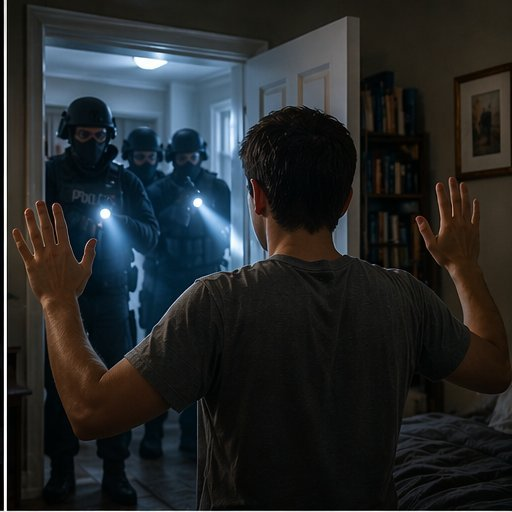

The Victim-Survivors.
Swatting targets are not random. They share a pattern: they are easy to find online and have a home address someone can track down.

§ 01 Who Is Most Often Targeted?
Shapiro (2023b) lists the main victim groups. All of them have one thing in common: they are visible online.
- Online gamers and streamers. Often teenage or young adult men who play competitively or stream live. Gamer Paul Denino was swatted many times, including once on a plane that was forced to land.
- Women in gaming and public online roles. Game developers Zoë Quinn and Brianna Wu were doxed in 2014 during GamerGate. A Canadian minor swatter specifically targeted female gamers who turned down his requests on Twitch.
- Celebrities. The list includes Chris Brown, Rihanna, Miley Cyrus, Justin Bieber, Ashton Kutcher, Tom Cruise, and Kim Kardashian, among others.
- Schools and colleges. After homes, these are the second most common targets. In 2022, fake bomb calls hit HBCU campuses in 12+ states.
- Lawmakers. Rep. Katherine Clark and Senator Chuck Schumer were targeted because they introduced bills against swatting.
- People with strong political voices. Enzweiler (2015) describes attacks on political commentators in payback for their opinions.
§ 02 How Offenders Find Their Victims
Shapiro (2023d) describes three main ways:
- Public records and social media. A quick Google search can return someone's address, phone number, and workplace.
- Data broker websites. Spokeo, Intelius, Acxiom, and others legally sell Americans' private info. By 2018, Acxiom alone had 10,000 data points on 2.5 billion people.
- Hacking and trickery. Fake emails (phishing), fake phone calls (vishing), fake texts (smishing), and spying on chat apps like Discord, Skype, and TeamSpeak all expose IP addresses and personal details.
§ 03 Why Online Habits Matter
Reyns, Henson, and Fisher (2011) studied 974 college students to find out what makes someone more likely to be a victim online. They found four main risk factors:
How Much You Share Online
The number of social media accounts, how often you post, and how many photos you share all raised the risk (Reyns et al., 2011).
Who Can Reach You
Accepting friend requests from strangers more than doubled the chance of harassment and cyberstalking (Reyns et al., 2011).
Your Online Friends
Having friends who behave badly online raised the risk of being attacked (Reyns et al., 2011).
What Makes You a Target
Being female doubled the risk of harassment and tripled the risk of unwanted sexual contact online (Reyns et al., 2011).
The things that make someone visible online — streaming, posting often, having big followings — are the same things that put them in reach of offenders. This does not make victims at fault. It means prevention (Tab 06) focuses on what the research shows can actually be changed.
§ 04 What Happens After
Shapiro (2023d, pp. 108–109) reports that the harm does not end when the SWAT team leaves:
- Trouble sleeping, thoughts of suicide, and PTSD are common.
- Tyrone Dobbs was shot in the face with rubber bullets, needed facial surgery, and later developed PTSD.
- Streamers lose thousands of dollars per month when attacks drive viewers away.
▲ Being online is not consent
Being public online is not an invitation to be attacked. But being visible is the biggest warning sign for being targeted. This page is about awareness — not blame.
References
- Enzweiler, M. J. (2015). Swatting political discourse: A domestic terrorism threat. Notre Dame Law Review, 90(5), 2001–2038.
- Reyns, B. W., Henson, B., & Fisher, B. S. (2011). Being pursued online: Applying cyberlifestyle–routine activities theory to cyberstalking victimization. Criminal Justice and Behavior, 38(11), 1149–1169.
- Shapiro, L. R. (2023b). Online swatters. In Cyberpredators and their prey (pp. 43–72). Boca Raton, FL: CRC Press.
- Shapiro, L. R. (2023d). Assessing legal needs: Is it time to criminalize swatting? Criminal Law Bulletin, 59(1), 95–114.